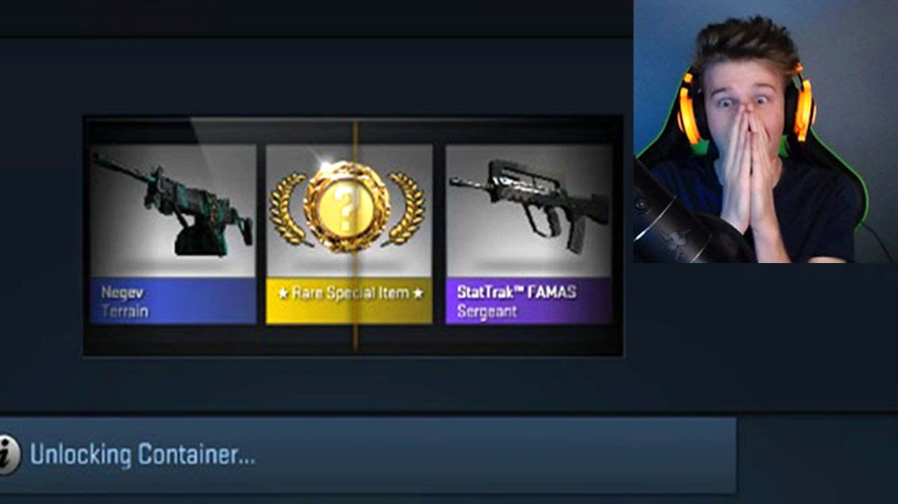
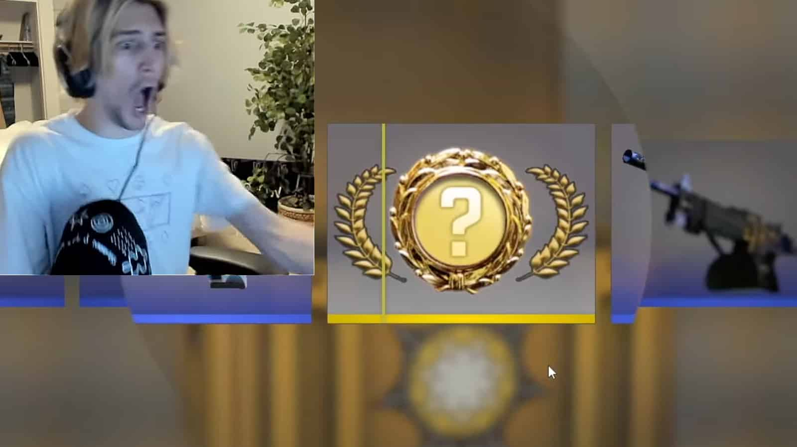
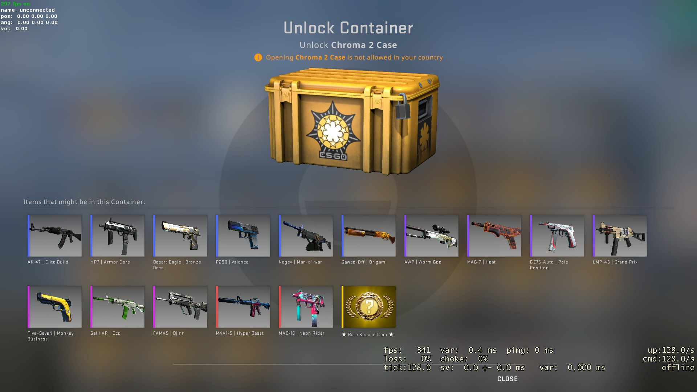
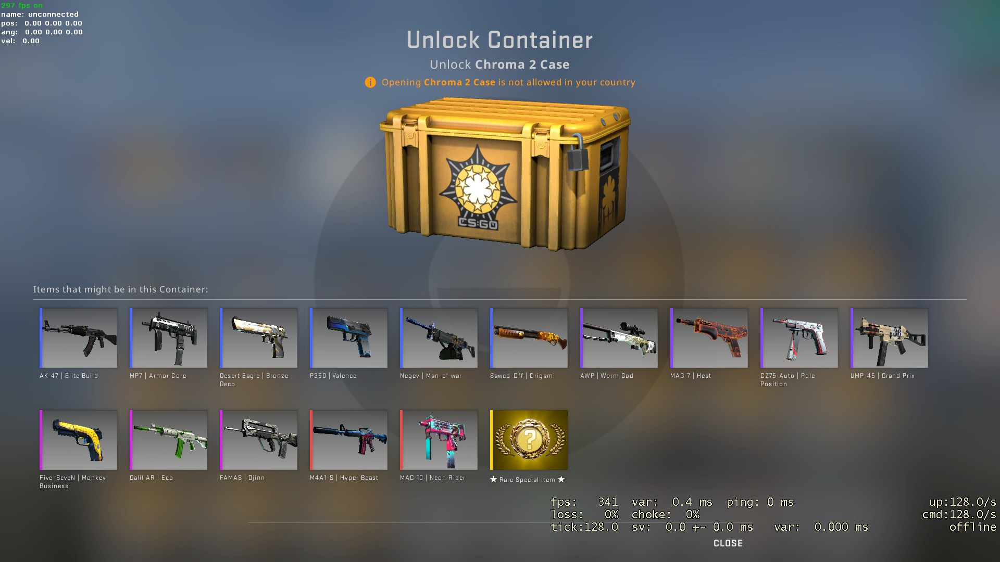

WHAT IS AN FPS?
An FPS, otherwise know as a First Person Shooter, is a sub-genre of shooter games. This genre focuses on playing through the eyes of the main character in a 3D space.
WHAT IS COUNTER-STRIKE?
Counter-Strike is a tactical FPS, which focuses deeply on precise gameplay. It has steep learning curves for gunplay and utility usage. There are multiple game modes for players competitive and casual alike. This is one of the earliest e-sport games, with hundreds millions of dollars being generated each year.
CSGO CASES
Counter-Strike has a unique element to its in game items. New items are only obtained through opening cases or through market purchases. The CSGO market was a very early form of NFTs. Each skins carries a certain rarity and market value that can be sold for real currency.


.jpg) 

THE HISTORY OF COUNTER-STRIKE
- Counter-Strike is a first-person shooter game that was originally released in 1999 as a mod for Half-Life. It quickly gained popularity and eventually became a standalone game.
- Counter-Strike: Zero is a single-player and multiplayer game that was released in 2004. It features updated graphics, new game modes, and a single-player campaign.
- A remake of the original Counter-Strike game. It features updated graphics and physics, new weapons and maps, and improved gameplay mechanics.
- It features updated graphics and gameplay mechanics, new game modes and maps, and a robust competitive scene with professional esports tournaments and a large player base.
- After over a decade of waiting CS2 has finally been announced. The limited beta test is open, but full launch will not be until summer or fall.